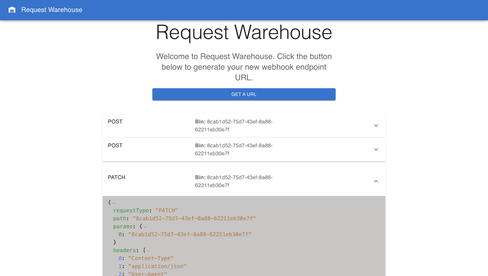
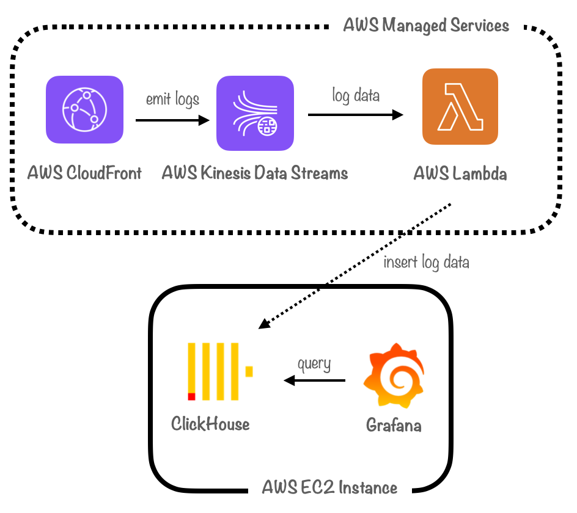

RequestWarehouse
RequestBin clone that generated public endpoints and displayed webhooks for testing (NGINX, Node.js, Express, Mongo, React)
I'm a software engineer based in Piscataway, NJ.
My team and I recently built Canopy, an open-source, real-time monitoring framework designed specifically for CDNs
Canopy is an open-source real-time monitoring framework designed specifically for use with the Amazon CloudFront CDN. We automate the deployment of an end-to-end pipeline for collecting, transforming, and storing Amazon CloudFront CDN logs, and process those logs to generate a critical suite of metrics for analysis. Check out our case study at https://canopy-framework.github.io/case-study/!
RequestBin clone that generated public endpoints and displayed webhooks for testing (NGINX, Node.js, Express, Mongo, React)
E-commerce CRUD app (Node.js, Express, Mongo, React)